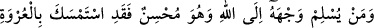
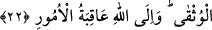
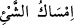
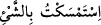
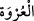
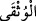

Teâlâ’nın izni ile kendisine tâbi olanı insâniyetin karanlıklarından rabbânî nûra çıkarır,
nefs-i emmâre azabından kurtarır ve kalb nîmetleriyle şereflendirir.
Ey sâlik! Eğer senin arzun hakîkî maksûd olan Allâh’a kavuşmaksa, bunun yolu uzun
ve menzili çoktur. Cedel ehli ile vehim, hayal ve şüphelerle karışık akıl sâhipleri bu
yolda rehberliğe güç yetiremezler. Süreyyâ yıldızı nerede, elini ona doğru uzatan
kimsenin eli nerede! Onlar ankayı değil ancak rüzgârı avlarlar. Çünkü anka
vücûd/varlık kafındadır. Vücûdun/varlığın hakikatlerini ise ancak ma‘rifet ve şuhûd ehli
bilebilir.
Allah Teâlâ’dan bizi ve sizi Kur’ân-ı Azîm’in hükümleriyle amel edenlerden, Kelâm-ı
Kadîm’in âdâbıyla edeplenenlerden, onun nurlarına ulaşanlardan ve sırlarına gerçek
mânâda erenlere arkadaş olanlardan kılmasını niyaz ederiz.
22. İyi davranışlar içinde kendini bütünüyle Allâh’a veren kimse, gerçekten en
sağlam kulpa yapışmıştır. Zaten bütün işlerin sonu Allâh’a varır.
“İyi davranışlar içinde” yâni yaptığı işi lâyık olan en güzel şekilde yaparak; ki bu
onun zâtî güzelliğini gerektiren vasfî güzelliğidir ve bu da ancak müşâhede ile hâsıl
olur. Bu sebeple Peygamberimiz (s.a.) ihsânı: “Allâh’ı görüyormuş gibi O’na ibâdet
etmendir. Sen O’nu göremezsen de O seni muhakkak görmektedir.”[99] şeklinde
açıklamıştır.
“Kendini bütünüyle Allâh’a veren kimse,” yâni kim, çalışana hak ettiği metâı teslim
etmek gibi, işini Allâh’a havâle etmek ve bütün varlığı ile O’na yönelmek sûretiyle
nefsini Allâh’a teslim ederse “gerçekten en sağlam kulpa yapışmıştır.”
el-Müfredât’ta der ki: “__WORD__, bir şeye iyice bağlanıp onu muhâfaza etmektir. “__WORD__ ise bir şeye iyice tutunmaya çalıştım, bunun yollarını aradım, demektir.
Tâcü’l-masâdır’da belirtildiği gibi bir şeye girişmek, teşebbüs etmek, el atmak,
yapışmak demektir. “__WORD__, bir şeyin kendine bir tarafından tutunduğu kulptur.
Kasdedilen bardak, kâse, testi gibi şeylerin tutamak yerleridir. “__WORD__, muhkem,
kopması mümkün olmayacak şekilde sağlam, tutunanın düşme ihtimali olmayacak
şekilde kuvvetli demektir. Buna tutunan, tutunulması en güvenli ve en sağlam olan bir
şeye tutunmuş olur. Sıkıca bir köşeye yapışmış ve sıkıca asılmış olur.
Bu ifâde, tevekkül ederek itâatle meşgul olan kişinin durumunu, dağın tepesine çıkmak
için kendisine sarkıtılan ve kopmasından asla endişe etmediği bir kulpa sarılan kişinin
durumuna benzetmektir.